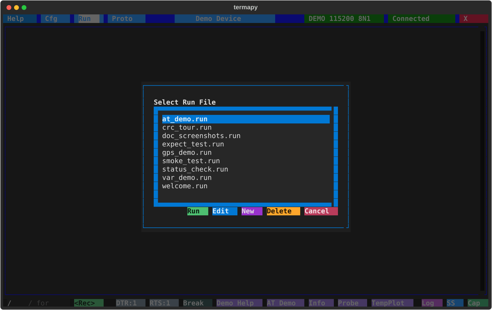
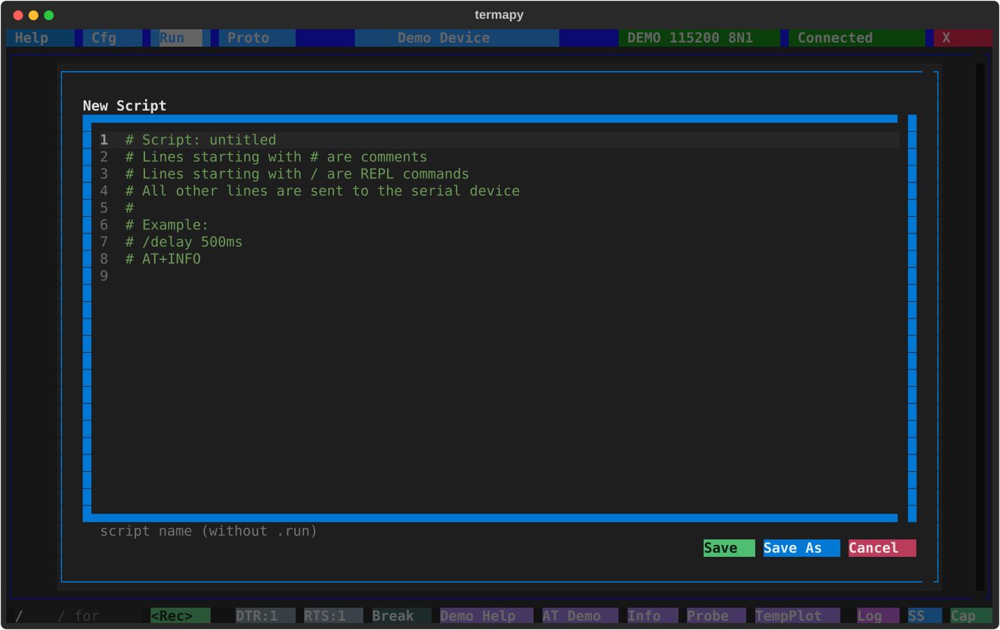

Scripting¶
Click the Run button in the title bar or use /run <filename> to work
with scripts (bare /run in the CLI lists them). The picker lists
scripts newest first with size, last-updated age, and each script's
docstring summary, and has six actions:
- Run: execute the highlighted script
- Edit: open the highlighted script in the editor
- New: create a new script (opens the editor with a template)
- Rename: rename the highlighted script (
.runis kept; never overwrites) - Delete: delete the highlighted script (asks for confirmation)
- Cancel: close the picker

The script editor provides syntax highlighting (bash-style) for comments
and a name field. Scripts are saved with a .run extension in the per-config
run/ folder.

Script file format¶
- Serial commands (sent to the device)
/prefixed REPL commands (delays, screenshots, print, etc.)- Comments (lines starting with
#) - Blank lines (ignored)
- Sequence counters with
{seqN+}for auto-incrementing values
A leading # comment block (lines 1..N, ending at the first blank or
non-comment line) is the script's docstring: the first line is the
summary shown by /run.list; the full block is what /run.help <script>
prints.
Recording a session¶
The fastest way to make a .run script is to record what you typed.
- TUI: click the Record button next to the REPL prompt, enter
a filename, run the commands, click Stop. Hide the button with
record_enabled: falsein your config. - CLI / MCP:
/run.record <filename>starts, bare/run.recordstops. Same lifecycle, no button.
Only successful dispatches land in the file -- failed commands,
typos, and /run.record itself are skipped. The target file is
refused if it already exists (delete or pick a new name). Add a #
docstring at the top of the recorded file and it becomes self-describing
in /run.list and /run.help.
Script commands¶
| Command | Description |
|---|---|
/delay <duration> |
Pause execution (e.g. 500ms, 2s, 1.5s) |
/expect {timeout=<dur>} match=<text> |
Wait for a serial line containing <text> (default 5s). Fails on timeout. |
/expect.regex {timeout=<dur>} match=<pattern> |
Same but the pattern is a regex. |
/confirm {message} |
Show Yes/Cancel dialog. Canceling stops the script. |
/run <script> |
Run a nested script (max 5 levels deep) |
/run.profile <script> |
Run nested script with per-line timing |
/run.rename <old> <new> |
Rename a script (.run is kept; never overwrites) |
Keywords use key=value syntax (spaces around = are OK). match= must be
last -- everything after it is the pattern.
Profiling¶
Run a script with per-line timing to find slow spots:
This saves a CSV to the prof/ folder with elapsed time for each line.
| Command | Description |
|---|---|
/run.profile <script> |
Run script with per-line timing |
/run.profile.cmd <command> |
Profile a single command |
/run.profile.show |
Open newest profile in system viewer |
/run.profile.dump |
Print newest profile to the terminal |
/run.profile.explore |
Open prof/ folder in file explorer |
/run.profile.list |
List profile files |
Output levels¶
A single dial controls how loud commands are. Four monotonic levels:
| Level | Result | Output | Status | Use |
|---|---|---|---|---|
silent |
— | — | — | scripts reading only CmdResult.value |
quiet |
✓ | — | — | show the answer, drop the rest |
normal |
✓ | ✓ | — | default |
verbose |
✓ | ✓ | ✓ | show progress chatter and timing |
Set the session default with /term.output <level>. Override for a single
call with cmd --<level> or cmd.<level>:
/term.output quiet # session default
/cfg baud_rate # shows 115200
/help port --verbose # one call back to verbose
/cap.dump capture.bin --silent # run, drop output, only value returns
Set the level at startup with --silent, --quiet, or --verbose on the
termapy command line.
JSON output: /term.request on, or --json per call¶
/term.request on is the session's structured dial: everything answers
in JSON -- bare device commands as request/response envelopes, termapy
commands as result envelopes. The device/termapy demarcation is deliberately
invisible; the session is either in JSON mode or in prose mode.
For a single call in a prose-mode session, every command also accepts
--json, which renders that one result as an envelope:
/port.list --json
{"cmd": "/port.list", "success": true, "error": "", "value": "COM3,COM4",
"data": [{"device": "COM3", ...}], "output_lines": [], "elapsed_s": 0.02}
data carries the structured form for commands that have one (/port.list,
/port.usb, /var, the folder listings /run.list / /cap.list / /ss.list
/ /proto.list / /plugin.list as {name, bytes, mtime, age_s} records
(mtime is ISO-8601, age_s seconds),
profile-mapped device commands). For everything else it
is null and the command's rendered answer arrives in output_lines (markup
flattened to plain text) -- /help --json is one envelope containing the
help text, nothing printed outside it. Errors arrive in the error field
rather than as a separate red line. Composes with the level flags -- the
envelope rides the result channel, so --json --quiet prints just the
envelope and --json --silent prints nothing (scripts still read value).
From a shell, termapy --cli -e "/port.list --json" pipes cleanly to jq.
For plugin authors: ctx.result() is the answer, ctx.output() is bulk
data, ctx.status() is progress chatter. Each gates on the active level.
Handlers that produce scriptable data must call CmdResult.ok(value=...)
so silent mode is useful.
Migrating older scripts. Scripts that used
/verbose on/off,/term.verbose on/off, or*.quietas a "set silently" idiom keep working via hidden forwarders. Run/run.legacy <file>to preview the canonical replacements, or/run.legacy --fix <file>to rewrite in place./run.legacy *processes every script inrun/.